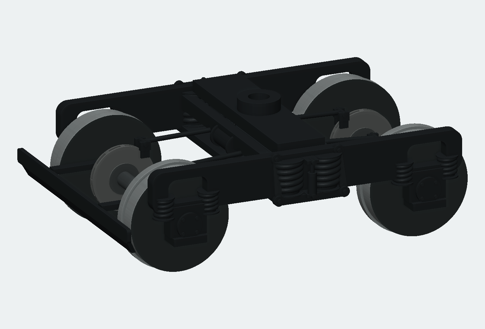
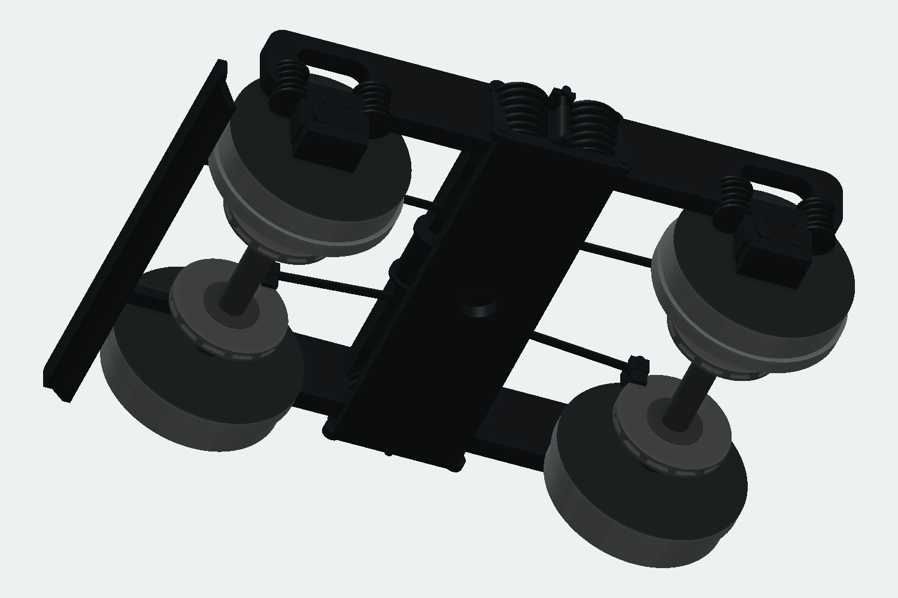

2026-10-25 / WP-08 UI境界。今回の製品変更は、表示を消した入力が履歴再構築から失われる不具合の修正。幾何コアの公開API、保存形式、公差は変更していない。模型の改訂と製品全体の検証を別に記録する。
115系の部位別比較・実形状画像 / 件数・SHA・実測の記録 / Windows全体ゲートの最終証拠 / 初回の原記録（梱包Timeout）
| 観点 | 対象と実行 | 分かったこと・対応 |
|---|---|---|
| 入口と操作の切替 | 全168カタログ項目の起動先・入力または理由の表示、441通りのツール遷移、ショートカット、取消、プレビューの所有数をQt自己試験で確認。 | 空入力で切り替えたときの状態を全体で確認。全項目の全入力組合せを網羅したという意味ではない。 |
| 入力を持った履歴と保存 | 非表示のスイープ経路・回転軸・ワイヤ立体の元線・押し出し終端の線/点、投影中の選択削除とUndo/Redo、別文書への切替後の古い展開プレビュー。 | 表示用Sceneだけを探していた経路を、文書の有効な元ワイヤ・点から復元。入力の非表示は維持し、ピック用Sceneへ隠れた線を混ぜない。 |
| 実モデルと出力物 | 115系通常版233部品、分割版240部品を実CADで構築。保存・再読込、STEP再読込、STL、開口・柱・部品間干渉、分割再組立を検査。 | 台車の連続巻線スイープが、非表示入力の欠落を実際に発見する入口になった。模型の画像は検査したSTLから描画し、Windows実画面と区別。 |
同じ長時間試験を理由なく3回繰り返す運用ではない。失敗の再現→修正範囲の重点試験→完成候補の全件・配布試験の順で進めた。読み取り専用の調査・品質担当2人を使い、編集・ビルド・試験・アプリ操作は主担当が実行した。
| 対象 | 変更 | 証拠・範囲 |
|---|---|---|
| スイープ・回転体 | 有効なCreateWireの定義から、非表示の経路・軸も取り出す。 | SO05：冷再構築、保存再読込、外接範囲、出力可能性。以前の配布版は同じ巻線文書でSOL-001、修正版では構築に成功。 |
| ワイヤから立体 | 12本の元線を非表示にしてもケージを再構築。 | SO06：Undo/Redo、冷再構築、保存。旧版と修正版へ同一SHAの文書を渡して結果を比較。 |
| 線・点まで押し出す | 終端参照の表示状態と、履歴の入力を分離。 | EX-LINE / EX-POINT：非表示参照で冷再構築に成功。これらの追加ケースだけで、再読込後の全体積や全境界を比較したとは扱わない。 |
| 投影中の削除 | 既存の役割選択を持つ試験を、Undo/Redo・再入場・他ツールへの寄り道まで拡張。 | Qtセッション操作。全ての操作をOSの実キーボードで行ったという主張ではない。 |
| 展開出力 | 同じ要素ID/同じrevisionでも文書IDが違う場合の古いプレビューを拒否する試験。 | OUT09：読込失敗なら旧プレビューを維持、別文書の読込成功後は古い結果の出力/追加を拒否、再取得後は成功。 |
共通処理は src/apps/cad_next/V2WireSource.h。SegmentId、作図補助線属性を保持する。公開コアAPIやワイヤの保存定義を変更しない。


平らに続く側枠上縁、連続した丸断面の斜め巻線、四隅の軸箱蓋ボルト、板状吊りリンク、ダンパー胴とロッド、横向きの両ピストン式シリンダ、両面パッド、放射状通気部、折返し付きプロウへ改訂した。途中案のシリンダを前後方向に置いた誤りは、原図を再照合して横方向へ修正してから最終部品を作った。
編集原本は tr62-native.kcd2。車体へは同じ実BRepを独立部品として配置し、後台車の共通部品を172.5 mm移動する。STLへの置換や形状の再近似はしていない。原本、部品、対応ID、形状ハッシュ、体積・境界箱を照合した。
原図の参考軸距2100 mm→26.25 mm、車輪径860 mm→10.75 mm。ディスク横位置±4.2 mmはHO機構への適合値であり、原型の厳密な1/80値ではない。ばね経路12本の最大サンプル誤差は0.000832 mm未満。これは経路の検査値で、模型全体や実物との寸法誤差ではない。
単一の近似Bスプライン経路はネイティブ体積積分で不成立となったため採用しなかった。各ばねの接線連続なBezier区間を1本の元ワイヤに保持した。600秒で停止した途中案・不成立案は作業記録に残し、最終データに使っていない。
側枠下縁、上下揺れ枕、軸箱本体は簡略化が残る。局所寸法、12分割の通気部、巻線の線径等は写真推定。クハ115-1222の年度別TR62A仕様を確定した完全実測復元ではない。実印刷・走行・絶縁・旋回時の動的干渉は未試験。
全体は195 CTest、開発版と配布版それぞれ595 UI、従来CAD自己試験の成功を確認した。初回はUI全件成功後に梱包が900秒でTimeout。元の失敗証拠を保全し、ソース・環境・バイナリを照合した194件の成功と、実CTestで867.6秒で成功した梱包再試験を集合として再照合した。梱包の再試験でも595 UIを全件実行した。時間制限・公差を変更せず、必要な試験を削除していない。
検証済み配布は out/releases/tool-bogie-accepted-retry-20261025/package/kachakacha_cad_next.exe。実行ファイルSHA-256は 6bc119625b90e5815506080fddc15932db4c634239a7c10d7f5821246b6dd4c2。模型のCAD・STEP・部位別STL一式も用意した。
模型は各版476点、干渉候補332/338組、分割再組立6組を確認した。再読込後の通常版233部品は最大体積差2.26e-14 mm³。Windowsの通常イベントループで表示し、同一モデル/同一exeの検査済みキャッシュ再利用とhitを記録した22.9秒の単発測定。冷再構築は通常版114.2秒、分割版195.9秒、台車詳細原本384.4秒であり、同条件の高速化比較には使わない。
OSの画面取得APIがタイムアウトし、再取得しても成功しなかったため、盲目的な実マウス操作は行わなかった。QtイベントによるUI試験、製品自身の通常Windows起動・実画面保存、ネイティブ検査を区別して報告する。「全ツールの全操作に不具合がない」とは保証しない。
削除したファイル：なし。以前の配布版・模型・失敗ログ・ユーザーの起動中アプリは保持。追加物は共通入力復元ヘルパー、回帰ケース、台車生成/部品検査ツール、新しい模型・比較資料。元の115面.kcd2は変更していない。